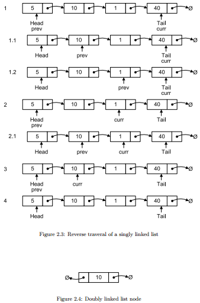

2. Doubly Linked List:-
Doubly linked lists are very similar to singly linked lists. The only difference is
that each node has a reference to both the next and previous nodes in the list.

2.2.1 Insertion:-
The only major difference between the algorithm in §2.1.1 is that we need to
remember to bind the previous pointer of n to the previous tail node if n was
not the first node to be inserted into the list.
1) algorithm Add(value)
2) Pre: value is the value to add to the list
3) Post: value has been placed at the tail of the list
4) n ← node(value)
5) if head = ∅
6) head ← n
7) tail ← n
8) else
9) n.Previous ← tail
10) tail.Next ← n
11) tail ← n
12) end if
13) end Add
Figure 2.5 shows the doubly linked list after adding the sequence of integers
defined in §2.1.1.
2.2.2 Deletion:-
As you may of guessed the cases that we use for deletion in a doubly linked
list are exactly the same as those defined in §2.1.3. Like insertion we have the
added task of binding an additional reference (P revious) to the correct value.
1) algorithm Remove(head, value)
2) Pre: head is the head node in the list
3) value is the value to remove from the list
4) Post: value is removed from the list, true; otherwise false
5) if head = ∅
6) return false
7) end if
8) if value = head.Value
9) if head = tail
10) head ← ∅
11) tail ← ∅
12) else
13) head ← head.Next
14) head.Previous ← ∅
15) end if
16) return true
17) end if
18) n ← head.Next
19) while n 6= ∅ and value 6= n.Value
20) n ← n.Next
21) end while
22) if n = tail
23) tail ← tail.Previous
24) tail.Next ← ∅
25) return true
26) else if n 6= ∅
27) n.Previous.Next ← n.Next
28) n.Next.Previous ← n.Previous
29) return true
30) end if
31) return false
32) end Remove
2.2.3 Reverse Traversal:--
Singly linked lists have a forward only design, which is why the reverse traversal
algorithm defined in §2.1.5 required some creative invention. Doubly linked lists
make reverse traversal as simple as forward traversal (defined in §2.1.4) except
that we start at the tail node and update the pointers in the opposite direction.
Figure 2.6 shows the reverse traversal algorithm in action.
1) algorithm ReverseTraversal(tail)
2) Pre: tail is the tail node of the list to traverse
3) Post: the list has been traversed in reverse order
4) n ← tail
5) while n 6= ∅
6) yield n.Value
7) n ← n.Previous
8) end while
9) end ReverseTraversal